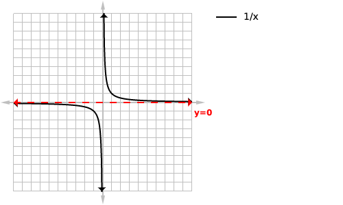
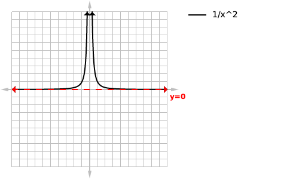
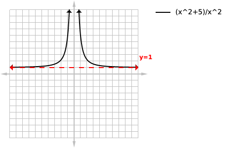
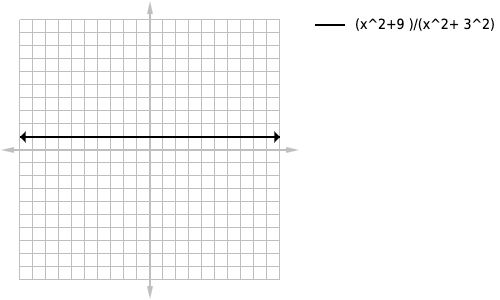
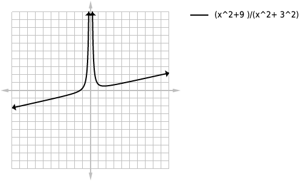
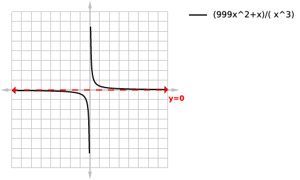
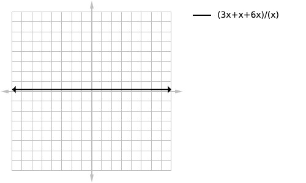
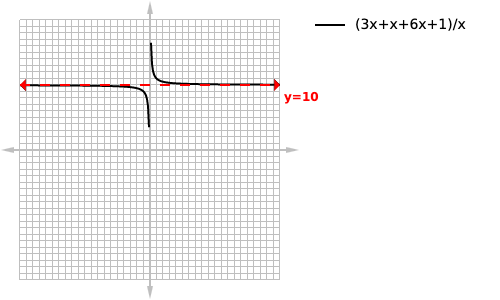
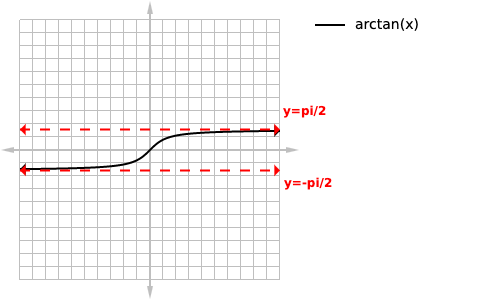

By:Mohammad-Ali Bandzar | August 10 2019
Horizontal asymptotes (often abbreviated to H.A) are horizontal lines that a function will aproach and become infinitesimally close to but will never touch as the function approaches either positive or negative infinity.
Three general types of asymptotes exist, vertical ones, horizontal ones, and oblique ones(also commonly called slant asymptotes). In this tutorial we will be focusing only on horizontal asymptotes as they are the easiest to determine. The equation for a horizontal asymptote will be a horizontal line.
A horizontal asymptote is a horizontal line(a y value) that the function will approach until positive and or negative infinity.
Horizontal asymptotes have some clear differences from vertical asymptote is that it is ok for your function to pass through a horizontal asymptote for a fixed number of times. Furthermore a function can only have a maximum of 2 horizontal asymptotes, one as x approaches positive infinity and one as x approaches negative infinity. Horizontal asymptotes are also more commonly written with limits because in theory when x is infinitely large it will touch our asymptote.
Horizontal asymptotes, unlike vertical ones are very easy to find. That’s because we always know where horizontal asymptotes May occur, if they are to exist they must occur at positive and or negative infinity. So the easiest way to solve for one would be to plug in 2 very big positive numbers (eg 1 and 2 million) and if the values are very close you know that it’s likely because the graph has a horizontal asymptote. The y value you get will also be the equation of the asymptote (y=). You can then do the same thing with two large negative numbers.

Below is a table of our function f(x) approaching our horuzontal asymptote but never reaching it,
| f(x) | result |
|---|---|
| f(1000) | 0.001 |
| f(2000) | 0.0005 |
| f(3000) | 0.0003333 |
| f(4000) | 0.00025 |
| f(5000) | 0.0002 |
| f(6000) | 0.00016666 |
| f(7000) | 0.0001428 |
| f(1000000) | 0.000001 |
If you are In school like I was when I learnt this you may have a teacher that will not like the above solution, they may say that no matter how many points you plug in it was merely a coincidence that all the points pointed (pun intended) to the function having s horizontal asymptote. If so follow the instructions below:
You take the rational function they give you say for example loading... you identify the highest power of x. In this case it is to the two(squared). You then rewrite the equation ignoring any factors that aren’t raised to the second power and we get the following: loading... from this we can see that as x becomes a very large positive or negative number y approaches zero, thus we have identified the equation of the horizontal asymptote as being zero. This can also be written as the limit as x approaches \pm infinity=0. You can verify this by graphing our function and zooming out a lot.

There are 3 key scinerions using this method
loading...
This question is a model of our second scenario, “equal powers”, 2 is obviously our largest power here so we can simplify the equation to loading... and since both the numerator and denominator have equal powers,the equation of our horizontal asymptote will be the fraction of our coefficients loading... which simplifies to y=1

loading...
naturally you may think that this is the “equal powers” situation and want to identify the highest power then cross things out like I’ve told you to before. But you would be wrong, because this equation expands out to
loading...
which simplifies to 1 which is a horizontal line and horizontal lines can’t have horizontal asymptotes.

loading...
because the numerator has a larger power than the denominator we can immediately recognize that the graph will not have a horizontal asymptote as the numerator will grow substantially faster than the denominator as we approach infinity, we will not have a horizontal looking line as we zoom out on our graphing calculator. We could also recognize this by using the method I mentioned about crossing out all factors that are not to the highest power, we would be left with:
loading...
And since the numerator will grow with x and the denominator will not since it’s fixed at 1. We can tell that the graph will trend upward as x goes toward infinity.

loading...
this one should be easy for you because the denominator has x to a greater power than the numerator we can immediately identify the horizontal asymptote as x=0. We could also use the crossing out method I taught earlier, by removing all factors with a power less than 3 we are left with:
loading...
And as x increases we get closer and closer to 0 making the equation of our horizontal asymptote:
loading...

loading...
This one I just threw in for fun, it’s another horizontal line because when simplified you get:
loading...
Which is in itself a horizontal line and horizontal lines can’t have horizontal asymptotes

loading...
I know this one may look very similar to the last example but when simplified you get
loading...
And that additional fixed factor of 1 in the numerator is what makes this function have a horizontal asymptote as the relevance of that one to the final product becomes less and less significant as x increases. Since we have equal powers we know that our horizontal asymptote will be the fraction of our co efficients or 10.

loading...
which can also be written as loading... or tan inverse x or arctan(x) this is a unique situation because it will have 2 different horizontal asymptotes, 1 as the equation approaches positive infinity and a different one as it approaches negative infinity.

THANKS FOR READING